Small trees up to 7 m tall.
7 ಮೀ ಎತ್ತರದವರೆಗಿನ ಸಣ್ಣ ಗಾತ್ರದ ಮರಗಳು.
Small trees up to 7 m tall.
சிறிய மரம் 7 மீ. உயரம் வரை வளரக்கூடியது.
Trunk thorny; bark smooth, greyish-white; blaze yellowish.
ಕಾಂಡ ದೊಡ್ಡ ಗಾತ್ರದ ಮುಳ್ಳುಗಳನ್ನು ಹೊಂದಿರುತ್ತದೆ;ತೊಗಟೆ ನಯವಾಗಿದ್ದು ಬೂದು ಮಿಶ್ರಿತ ಬಿಳಿ ಬಣ್ಣದಲ್ಲಿರುತ್ತದೆ;ಕಚ್ಚು ಮಾಡಿದ ಜಾಗ ಹಳದಿ ಛಾಯೆ ಹೊಂದಿರುತ್ತದೆ.
Trunk thorny; bark smooth, greyish-white; blaze yellowish.
மரத்தின் நடுத்தண்டின் தளப்பகுதியில் முட்களுடையது; மரத்தின் பட்டை வழுவழுப்பானது, சாம்பல் நிறமானது-வெள்ளை நிறமானது; உள்பட்டை மஞ்சள் நிறமானது.
Young branchlets green, terete, glabrous, with axillary spines.
ಎಳೆಯ ಕಿರುಕೊಂಬೆಗಳು ಹಸಿರರಾಗಿದ್ದು,ದುಂಡಾದ ಆಕಾರ ಹೊಂದಿದ್ದು ರೋಮ ರಹಿತವಾಗಿರುತ್ತವೆ ಹಾಗೂ ಅಕ್ಷಾಕಂಕುಳಿನ ದೊಡ್ಡ ಗಾತ್ರದ ಮುಳ್ಳುಗಳ ಸಮೇತವಿರುತ್ತವೆ.
Young branchlets green, terete, glabrous, with axillary spines.
சிறிய நுனிக்கிளைகள் பச்சை நிறமானது, குறுக்குவெட்டுத் தோற்றத்தில் வளையமானது, உரோமங்களற்றது, இலைக்கோணங்களில் முட்களுடையது.
Leaves simple, alternate, spiral; petiole 0.4-0.8 cm long, canaliculate in cross section, glabrous; lamina 8.5-17.5 x 4-7.5, elliptic to elliptic-oblong or ovate, apex acute with blunt tip or obtuse, base rounded, margin entire, coriaceous, glabrous; midrib flat or slightly canaliculate above; secondary_nerves 3-5 pairs, ascending, often lower most pair opposite; tertiary_nerves slender, reticulo-percurrent.
ಎಲೆಗಳು ಸರಳವಾಗಿದ್ದು ಪರ್ಯಾಯ ಮತ್ತು ಸುತ್ತು ಜೋಡನಾ ವ್ಯವಸ್ಥೆಯಲ್ಲಿರುತ್ತವೆ; ತೊಟ್ಟುಗಳು 0.8 – 0.8 ಸೆಂ.ಮೀ. ಉದ್ದವಿದ್ದು ಅಡ್ಡ ಸೀಳಿದಾಗ ಕಾಲುವೆಗೆರೆಯ ಆಕಾರ ಹೊಂದಿದ್ದು, ರೋಮರಹಿತವಾಗಿರುತ್ತವೆ;ಪತ್ರಗಳು 8.5 – 17.5 X 4-7.5 ಸೆಂ.ಮೀ. ಗಾತ್ರ, ಅಂಡವೃತ್ತದಿಂದ ಅಂಡವೃತ್ತ –ಚತುರಸ್ರ ಅಥವಾ ಅಂಡದವರೆಗಿನ ಮಾದರಿಯ ಆಕಾರ, ಅಥವಾ ಚೂಪಲ್ಲದ ಮಾದರಿಯಲ್ಲಿರುತ್ತದೆ,ಬುಡ ದುಂಡಾಗಿರುತ್ತದೆ, ಅಂಚು ನಯವಾಗಿದ್ದು, ಮೇಲ್ಮೈ ತೊಗಲನ್ನೋಲುವ ರೀತಿಯಲ್ಲಿದ್ದು ರೋಮರಹಿತವಾಗಿರುತ್ತದೆ; ಮಧ್ಯನಾಳ ಮೇಲ್ಭಾಗದಲ್ಲಿ ಚಪ್ಪಟೆಯಾಗಿ ಅಥವಾ ಸ್ವಲ್ಪ ಮಟ್ಟಿಗೆ ಕಾಲುವೆಗೆರೆ ಸಮೇತವಿರುತ್ತದೆ;ಎರಡನೇ ದರ್ಜೆಯ ನಾಳಗಳು 3 ರಿಂದ 5 ಜೋಡಿಗಳಿದ್ದು ಆರೋಹಣ ರೀತಿಯಲ್ಲಿರುತ್ತವೆ,ಹೆಚ್ಚಿನ ಸಂಧರ್ಭಗಳಲ್ಲಿ ತಳಭಾಗದ ಅತಿ ತಳಗಿನ ಜೋಡಿಗಳು ಅಭಿಮುಖಿಗಳಾಗಿರುತ್ತವೆ;ಮೂರನೇ ದರ್ಜೆಯ ನಾಳಗಳು ತೆಳುವಾಗಿದ್ದು ಜಾಲಬಂಧ ನಾಳ ವಿನ್ಯಾಸದಲ್ಲಿದ್ದು ಎಲೆ ದಿಂಡಿಗೆ ಅಡ್ಡವಾಗಿ ಕೂಡುತ್ತವೆ.
Leaves simple, alternate, spiral; petiole 0.4-0.8 cm long, canaliculate in cross section, glabrous; lamina 8.5-17.5 x 4-7.5, elliptic to elliptic-oblong or ovate, apex acute with blunt tip or obtuse, base rounded, margin entire, coriaceous, glabrous; midrib flat or slightly canaliculate above; secondary_nerves 3-5 pairs, ascending, often lower most pair opposite; tertiary_nerves slender, reticulo-percurrent.
இலைகள் தனித்தவை, மாற்றுஅடுக்கமானவை, சுழல் போன்று அமைந்தவை; இலைக்காம்பு 0.4-0.8 செ.மீ. நீளமானது, குறுக்குவெட்டுத் தோற்றத்தில் கேனாலிகுலேட், உரோமங்களற்றது; இலை அலகு 8.5-17.5 x 4-7.5, நீள்வட்ட வடிவானது முதல் நீள்வட்டம்-நீள்சதுர வடிவானது அல்லது முட்டை வடிவானது, அலகின் நுனி கூரியதுடன் அதன் முனை மழுங்கியது அல்லது மெட்டையானது, அலகின் தளம் வட்டமானது, அலகின் விளிம்பு முழுமையானது, கோரியேசியஸ், உரோமங்களற்றது; மையநரம்பு மேற்புறத்தில் அலகின் பரப்பிற்கு சமமானது அல்லது அலகின் பரப்பைவிட பள்ளமானது; இரண்டாம் நிலை நரம்புகள் 3-5 ஜோடிகள், நுனி நோக்கி வளைந்தவை, தளத்திலுள்ள ஒர் ஜோடி நரம்புகள் எதிராகமைந்தவை; மூன்றாம் நிலை நரம்புகள் மெல்லியவை, வலைப்பின்னல்-பெர்க்கரண்ட் போன்றவை.
Inflorescence axillary spikes; flowers polygamous, red, sessile.
ಪುಷ್ಪಮಂಜರಿಗಳು ಅಕ್ಷಾಕಂಕುಳಿನಲ್ಲಿರುವ ಕದಿರುಮಂಜರಿ ಮಾದರಿಯವು;ಹೂಗಳು ಸಂಕೀರ್ಣಲಿಂಗಿಗಳಾಗಿದ್ದು ಕೆಂಪು ಬಣ್ಣದಲ್ಲಿರುತ್ತವೆ ಮತ್ತು ತೊಟ್ಟುರಹಿತವಾಗಿರುತ್ತವೆ.
Inflorescence axillary spikes; flowers polygamous, red, sessile.
மஞ்சரி இலைக்கோணங்களில் காணப்படுபவை, ஸ்பைக் வகை மஞ்சரி; மலர்கள் பாலிகேமஸ், சிவப்பு நிறமானது, காம்பற்றது.
Drupe, pyriform, 3 cm long, red; seed one.
ಡ್ರೂಪ್ಗಳು ಪೇರು ಹಣ್ಣಿನ ಆಕಾರದಲ್ಲಿದ್ದು 3 ಸೆಂ.ಮೀ. ಉದ್ದವಿರುತ್ತವೆ;ಬೀಜಗಳ ಸಂಖ್ಯೆ 1.
Drupe, pyriform, 3 cm long, red; seed one.
உள்ளோட்டுத்தசைகனி (ட்ரூப்), பைரிபார்ம், 3 செ.மீ. நீளமானது, சிவப்பு நிறமானது; ஒர் விதையுடையது.
 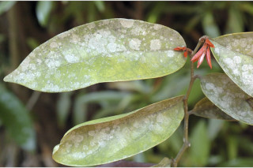
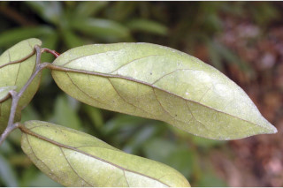
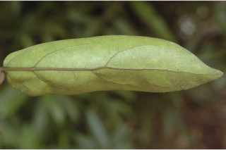
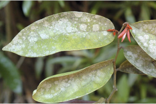
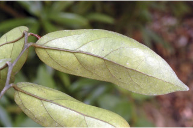
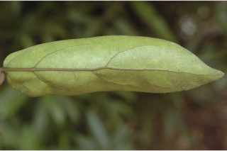
 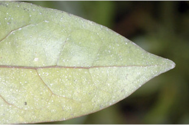
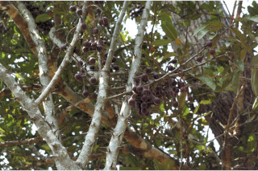
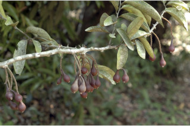
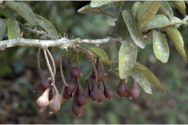
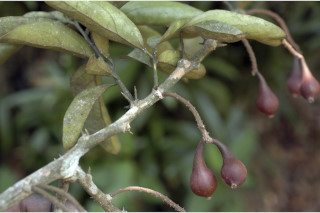
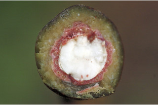
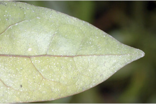
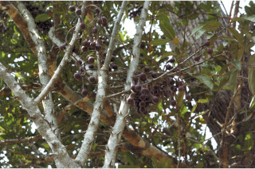
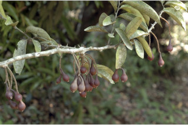
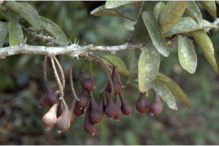
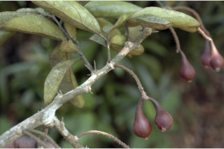
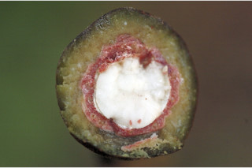